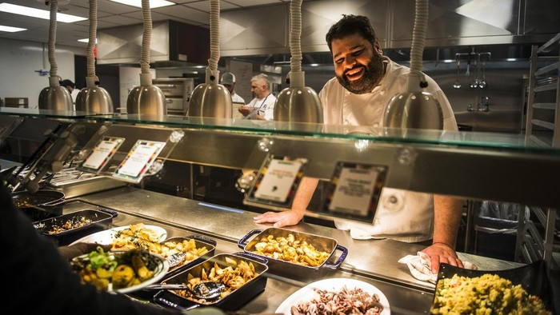

PT. Anggun Tjahja Catering adalah perusahaan yang bergerak dibidang catering. Perusahaan ini didirikan oleh Ibu Anggun. Awalnya karena iseng-iseng berhadiah. Alhamdulillah sekarang sudah dikenal banyak orang.
Visi : memuaskan pelanggan dengan hidangan yang mantul.
Misi : memberikan layanan terbaik, cita rasa yang berkualitas, dan kebersihan yang selalu terjaga.

Kualitas makanan yang terjamin, aneka makanan Nusantara dan Mancanegara, pelayanan yang memuaskan, makanan yang disediakan selalu higienis, dan diolah secara baik karena turun-temurun.